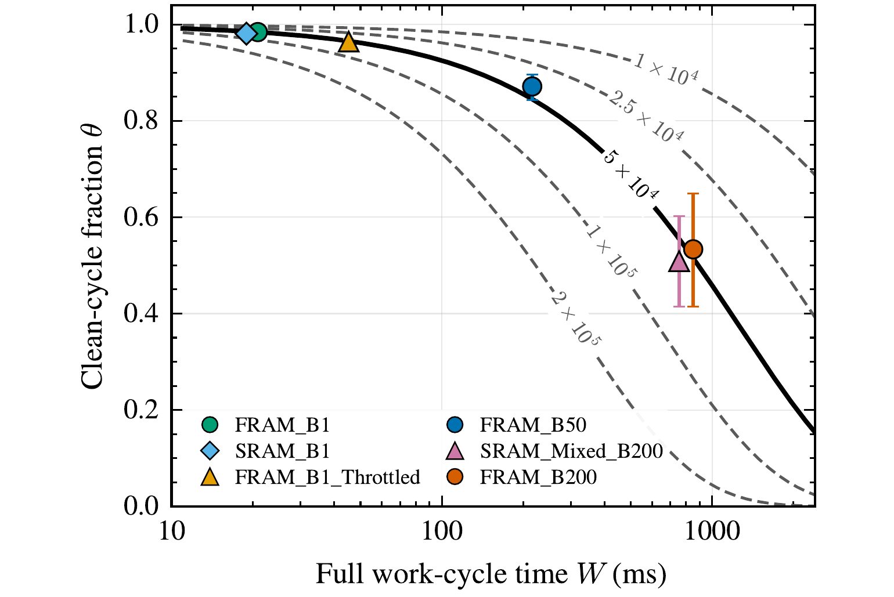
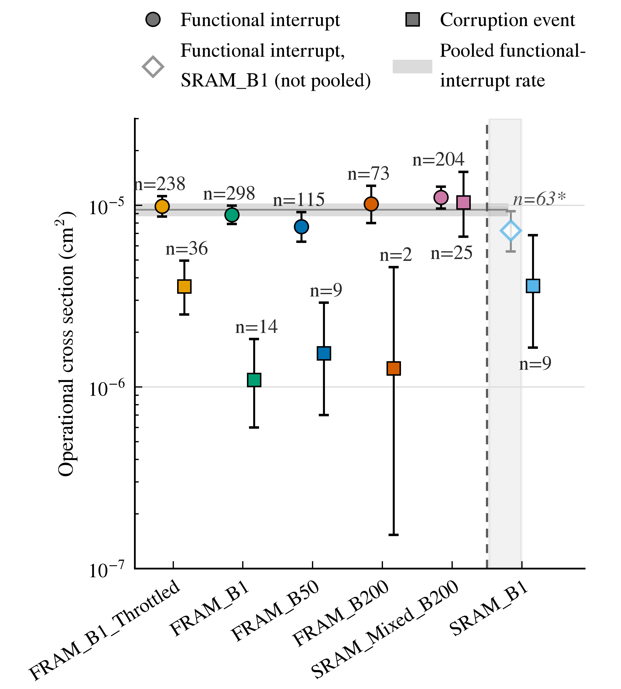
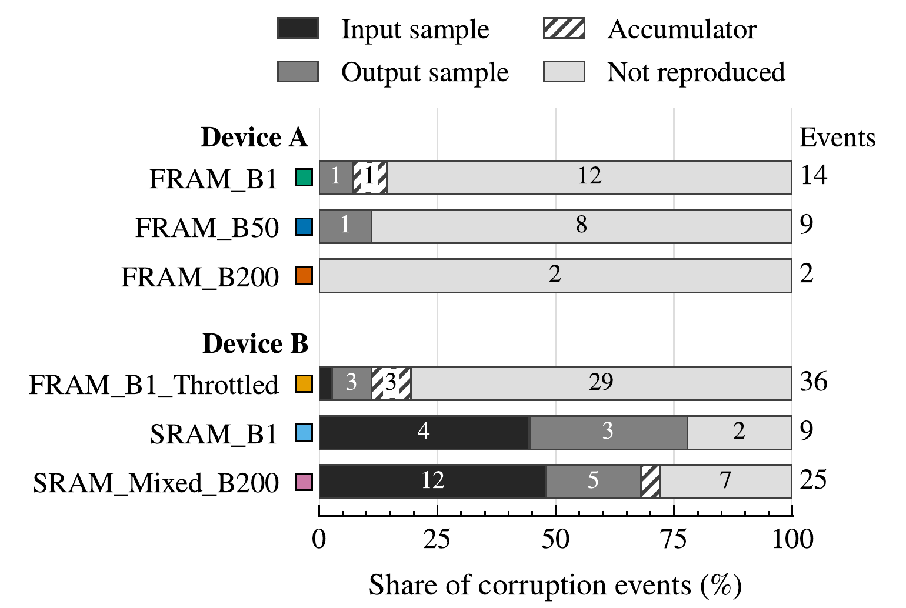

The relation, and whose it is
Published flux-selection methodology writes the share of surviving work cycles as one minus the probability that an interrupt arrives within the cycle, evaluated over the fluence delivered during it (Zimmaro et al., RADECS 2022). For interruptions arriving at a constant rate it reduces to the exponential, the survival form long used in checkpointed computation (Young 1974; Daly 2006):
\(\sigma_{\mathrm{cyc}}\) is the cross section for losing a work cycle and \(\phi W\) is the fluence one cycle receives, so a cycle survives or not according to the exposure it accumulates while it runs. Writing the exponent this way holds the cross section constant in flux, which is the case while each strike acts on its own.
Zimmaro et al. developed the method for system-level proton and mixed-field testing, choosing flux to maximize the chance of observing a low-probability failure before a dominant one interrupts the work cycle, in systems whose application sets that cycle. The companion paper builds on it in three directions. It varies the work cycle deliberately, from 20 to 814 ms, on heavy ions at component level. It counts the surviving cycles directly. And it charges the test for the time it spends recovering.
The relation sits alongside established flux guidance, which bounds flux to keep a measurement free of artifacts (Buchner et al. 2002; Berg et al. 2009; Quinn 2014) or to avoid overwhelming error-correction logic (Zoutendyk et al. 1987; Allen et al. 2010, 2011). ESCC 25100 asks that functional interrupts be characterized in all of a device's operating conditions, that the share of test time in which a fault could be detected be measured and applied to the cross section, and that flux keep the remaining dead time under 20% of that share. The work a device completes between interrupts has been reported as a mean work to SEFI, used to compare processor configurations (Esquer et al. 2022, 2024), following the mean workload between failures introduced for GPU reliability (Rech et al. 2014). Bohman et al. (2019) showed the same tradeoff on the MSP430FR5969: software redundancy lowered the program-error cross section by a factor of 17 to 29, and because it also slowed execution, the work completed between failures rose by a factor of 4 to 7.
The measurement behind \(\sigma_{\mathrm{cyc}}\)
Six firmware builds of an FIR filter ran on the MSP430FR6989 at a flux held within 11% of \(5\times10^{4}\) cm⁻² s⁻¹ and one LET (7.9 MeV·cm²/mg), with the work cycle set by batch size and clock choice from 20 ms to 814 ms. A lost cycle is one in which a host-detected interrupt occurred, whatever the cycle returned, counted once however many detections it carried. Of 20,459 cycles attempted, 588 were lost against 787 host detections, the excess being repeat episodes on cycles already lost. The fraction that survived uses neither \(\sigma_{\mathrm{cyc}}\) nor \(W\), so comparing it against the relation tests the formula rather than restating it.
| Build | \(W\) | Attempted | Lost | \(\theta\) measured [95%] | \(\theta\) from the fit |
|---|
A fit on the counted fractions, taking each build at its own flux and work-cycle time, gives one cross section shared across all six, and it carries across the whole range. Because the exponent scales with \(\phi W\), pushing flux costs the long-cycle builds far more than the short: at \(2\times10^{5}\) cm⁻² s⁻¹ the same fit puts the longest cycle at 8% surviving, while the shortest still returns 94%.

The companion paper's Fig. 4. Points are direct counts with exact 95% binomial intervals, taken at the matched flux. Every curve uses the single fitted \(\sigma_{\mathrm{cyc}}\) and no other parameter. Where a curve crosses a target \(\theta\), its \(W\) is that flux's longest usable work cycle, 135 ms at the matched flux for \(\theta=0.90\).
Two assumptions, tested
The fit rests on two assumptions, and the direct count tests both. The first is that one cross section serves every build. Giving each build its own value describes the counts no better than the shared one, by a likelihood ratio of G² = 6.4 on 5 degrees of freedom and p = 0.27, and the same holds within the three pure-FRAM 16 MHz builds, where only \(W\) moves and p = 0.56. The second is that a cycle's risk of interruption stays constant while it runs. A free-shape Weibull survival law returns a shape β = 0.98, with a 95% interval of 0.92 to 1.04, and the pure-FRAM builds alone give the same 0.98 (0.90 to 1.06). The constant-risk form above is the case β = 1. The agreement across \(W\) from 20 to 814 ms is therefore evidence for the form rather than a failure to reject it, and it is what lets \(\sigma_{\mathrm{cyc}}\) measured at one work cycle carry to another.
Retried executions are dropped from the counted cycles and from the exposure they scale. They carry 1 to 2% of beam-on time at \(B=1\) and 29 to 30% at \(B=200\). The lost-cycle count and its exposure drop the same executions, so \(\sigma_{\mathrm{cyc}}\) is not biased by the exclusion, but counting retries as attempts instead would raise it by 9%.
Which cross section feeds the relation
The campaign produced three candidates. \(\sigma_{\mathrm{cyc}}\) counts lost cycles over the fluence delivered while a cycle was running. The functional-interrupt cross section from the device's reset counter, \(\sigma_{\mathrm{FI}}\), and the one from the host's recovery record, \(\sigma_{\mathrm{det}}\), count over the full beam-on fluence. Both give higher counts and higher exposures, and the second effect wins: beam-on fluence credits exposure during windows in which no work cycle could be interrupted. The host's record gives \(\sigma_{\mathrm{det}}=8.3\times10^{-6}\) cm², a rate of 0.42 s⁻¹ at the matched flux against the fitted 0.78 s⁻¹, and predicts a higher surviving share than every build measured. Both beam-on cross sections describe the device's response accurately, but either one overstates the surviving share, because its exposure includes the time outside attempted work cycles spent handling interrupts. In this campaign only 24 to 43% of beam-on time in a call fell within work cycles, and most of the rest went to handling interrupts (see below). The same caution applies to any test with dead time in beam.
Firmware comparison and the storage signature
A microcontroller's single-event sensitivity depends on which internal hardware blocks the running code exercises (Koga et al. 1997; Nekrasov et al. 2015; Houssany et al. 2021; Esquer et al. 2022; Noizette et al. 2023). A test program that exercises only the programmer-visible registers can overstate a processor's upset rate by up to an order of magnitude against application-like code (Velazco et al. 1992), and test-as-you-fly procedures address this with representative programming and inputs (Quinn 2014; Quinn et al. 2021). The companion campaign varied the firmware to see how far the choice moves each rate.
At the reference LET and flux, the corruption-event cross section ranged from \(1.09\times10^{-6}\) to \(1.04\times10^{-5}\) cm² across the six builds, a factor of 9.5. A corruption event can only be read off a delivered result, so its rate divides by the fluence delivered during the work cycles that returned one: in-cycle exposure scaled by the clean-cycle fraction \(\theta\). Crediting exposure from cycles that never delivered a result would shrink the cross section most for the builds that lose the most. SRAM_Mixed_B200 returns the highest rate and SRAM_B1 the second, level with FRAM_B1_Throttled. The three builds that ran on device B return the three highest rates, so the split between high and low rates is also a split between devices.
The functional-interrupt cross section, counted from each device's own reset counter over beam-on exposure and comparable on five of the six builds, ranged only from \(7.7\) to \(11.1\times10^{-6}\) cm², a factor of 1.4, with a count-weighted pooled rate \(\sigma_{\mathrm{FI}}=9.4\times10^{-6}\) cm². The reset count runs 1.17 to 1.44 times the host-detected count, depending on the build. A test for one shared rate across the five rejects it (χ² = 12.3 on 4 degrees of freedom, p = 0.016), with FRAM_B50 and SRAM_Mixed_B200 carrying 83% of the statistic. That rejection depends on how multi-reset gaps are credited: crediting each such gap once leaves the five consistent with one rate (p = 0.64) and narrows the spread from 1.4 to 1.2. Either way the spread is small against the corruption spread. The device stops delivering results at nearly the same rate whichever firmware it runs, while what corrupts a result depends far more on the firmware.

The companion paper's Fig. 2, at surface LET 7.9 MeV·cm²/mg and matched flux (4.6 to 5.1×10⁴ cm⁻² s⁻¹). Circles are the functional-interrupt cross section from the device's own reset counter, over beam-on exposure. Squares are the corruption-event cross section, over exposure to clean work cycles. SRAM_B1's counter could not be reconstructed, so its interrupt point is the open diamond with an asterisk and is left out of the pooled band. Error bars are 95% exact intervals.
Storage placement is the leading candidate for the larger spread. The one build that slows its clock during computation also sits above the three pure-FRAM 16 MHz builds (χ² = 18.7 on 3 degrees of freedom, p < 0.001, 65% of it from that build), but it shares a device with both SRAM builds, so this campaign cannot separate the clock from the device. Batch size alone showed no detectable effect across those three builds (χ² = 0.6 on 2 degrees of freedom, p = 0.73), in a test with little power.
A single-bit-flip test, in the manner of fault-injection studies (Quinn et al. 2013), locates the fault site behind each corruption event. Of the 34 events in the two SRAM builds, 16 are reproduced by a single flip in an input sample, against 1 of the 36 events of FRAM_B1_Throttled on the same device, so the signature tracks storage rather than the device (Fisher exact, \(p<10^{-4}\)). Of the 61 events in the FRAM builds, 84% are not reproduced by any simulated flip, against 26% of the SRAM events, and 30 of the 35 events that are reproduced sit at a stored sample rather than in the arithmetic.
This agrees with what is known of FRAM. Moving working data into FRAM has been reported to eliminate the observed software failures on a related MSP430 (Quinn et al. 2014). On standalone FRAM parts, single-event effects are located in the peripheral circuitry rather than in the cell array (Bosser et al. 2018; Ju et al. 2022), and under pulsed dose rate and neutrons a standalone FRAM failed reproducibly only while actively read and written (Harris et al. 2024). The storage and batch-size findings are properties of the firmware, the same dependence on program behavior reported for other processor benchmarks (Quinn 2014; Quinn et al. 2015; Stirk et al. 2023).

The companion paper's Fig. 3. Each bar is one build's corruption events. An event takes the site at which a simulated single flip reproduces its first corrupted output, and no flip at the five simulated sites reproduces the events in the lightest segment. The colored key beside each build matches its color in the paper's other figures.
Recovery time in the flux choice
The clean-cycle fraction counts only in-cycle time, but each lost cycle also costs a recovery, during which no work cycle runs and the device is unobservable. Let \(\tau\) be the mean recovery time per lost cycle. The duty factor, the share of the time spent running cycles and recovering that yields countable exposure, is the surviving cycle time over the sum of cycle time and the recovery expected per cycle:
Setting \(\tau=0\) returns \(D=\theta\), so the duty factor builds directly on the published relation. \(D\) is the test-time counterpart of the availability that system-level guidance computes for a mission from downtime and cross section (Coronetti et al., TNS 2021). ESCC 25100 asks that a comparable active-time share be measured and applied to a cross section.
How large \(\tau\) is depends on the device class. Many microcontrollers that boot from on-chip non-volatile memory reset themselves in milliseconds when an internal reset path is available (Quinn et al. 2014; Texas Instruments 2019; Zimmaro et al., TNS 2022), while systems-on-chip that run Linux are recovered by a host-commanded reboot or power cycle taking tens of seconds to minutes (Esquer et al. 2024; Frías-Domínguez et al. 2025).
Charged with each build's own \(\theta\) and \(\tau\), 34 to 72% of the time spent running cycles and recovering yielded no countable exposure, depending on the build.
The charge a build pays is \((1-\theta)\tau/W\). A short cycle carries a high ratio of recovery time to cycle time, but it also loses a correspondingly smaller share of its cycles, and the two effects cancel to first order. While few cycles are lost, \(1-\theta\) rises nearly in proportion to \(W\), so the work-cycle time drops out and the charge is left to \(\tau\). FRAM_B1 runs a 20 ms cycle and takes 1.17 s to recover from a loss, about sixty cycle-lengths, but loses only 1.6% of its cycles, and 1.6% of sixty is close to one, so it spends about as long recovering as running cycles. Its clean-cycle fraction is 0.98 while its duty factor is only 0.51. A build with forty times the work cycle and the same recovery time would pay about 75% of that charge at this flux.
The two builds that keep the most cycles, FRAM_B1 and SRAM_B1, rank third and fourth on duty factor. Each takes about twice as long to recover from a lost cycle, 1.17 and 1.26 s, as the two builds that pass them, 0.58 and 0.59 s. The directly measured countable share reproduces that same order with no model involved.
\(\tau\) is measured, as the mean episode duration times the episodes a lost cycle carried, and runs 0.58 to 1.28 s here. Every build settled in the same 0.165 s when the automatic path worked, so \(\tau\) is set by the tail of episodes that failed to resynchronize. Each failure cost a fixed timeout of five or ten seconds, the time of thirty to sixty successful recoveries. Five of the six builds share one failure rate near 4%. SRAM_B1 failed in 16% of episodes, and SRAM_Mixed_B200 carried 2.5 episodes per lost cycle against at most 1.6 elsewhere. The campaign cannot separate either build from its documented counter corruption as the cause. The slowest 5% of episodes carry 23 to 69% of each build's recovery time, so reducing how often recovery fails, or how long the host waits when it does, is a larger lever than the settle.
Scored against the next work cycle the device delivered, automatic recovery restored function in 95.3% of cases and a manual reset in 96.4%, a difference of one point with a 95% interval of −5 to +3 points. The automatic path kept the beam on. For the build swept across LET, pausing the beam at every detection for the median 84.6 s manual reset would have delivered \(1.45\times10^{7}\) cm⁻² instead of the \(2.56\times10^{8}\) cm⁻² actually accumulated, a factor of 18 less exposure. A campaign that pauses the beam to recover does not escape the charge, since \(\tau\) then moves from its beam-on budget to its facility budget: an escalated recovery cost a mean of 93.7 s against that median of 84.6 s.
Where the rest of the beam-on time went
Recovery is not the only time a call spends outside its work cycles. Share of beam-on time in a call, across the six builds:
| Activity | Share of beam-on time in a call |
|---|
A re-run does not begin from a verified state, so it is not counted as a new work cycle. \(D\) charges recovery alone, so it is an upper bound on the countable share. Measured directly, as the time in cycles that returned a clean result over beam-on time in a call, that share is 12 to 42%, below \(D\) for every build, because \(D\) charges neither the host's wait to detect an interrupt nor the re-running of cut-short cycles. Adding the measured detection latency, 0.7 to 1.1 s per lost cycle, to \(\tau\) brings \(D\) within 0.02 to 0.05 of the measured share at \(B\le50\), for example 0.39 against 0.37 for FRAM_B1.
A caution on hidden strikes
Recovering a device under beam raises a question of counting. If a second strike lands before the host has detected and recovered from the first, the device resets again but no new recovery episode opens. This is the counting loss known from radiation detectors (Knoll 2010). Zimmaro et al. (TNS 2022) measured it on a radiation monitoring system recovered by an external watchdog, where a counted cross section fell by a factor of 3.76 as flux rose by a factor of 10.5.
In the companion campaign, the device's reset counter records these hidden resets, along with repeated resets that follow a single event, so the true interrupt rate lies between the host's count and the counter's. At the reference condition, 11 to 13% of the interrupts in the four FRAM builds were hidden this way, so their true interrupt rate likely lies 12 to 16% above the host-detected rate. The estimate holds on average; allowing for its uncertainty, the hidden share could lie anywhere from 6 to 17%.
Most of that loss arose while the host was still waiting to detect the first reset, and 2 to 3 points arose during recovery. Closing a shutter on detection keeps recovery out of the exposed window, as Wilcox et al. (2017) did with a board-mounted shutter whose closed time was subtracted from the delivered fluence, and as Texas Instruments (2019) did to keep a second strike out of the post-reset boot. The detection latency, set here by the host's own wait and timeouts, is the window that remains.
What this means for a design: hidden strikes bias a host-detected interrupt rate low, and with it a projected mission interrupt rate. They do not bias the clean-cycle fraction, \(\sigma_{\mathrm{cyc}}\) or the corruption-event rate, since those are counted on cycles that survived. Three measured inputs and one choice set a dynamic test's flux and work cycle: the lost-cycle cross section from a pilot, the recovery time per lost cycle, the detection latency, and the targeted share of surviving cycles.
Quantities
As defined in the companion paper's Tables II and III, with the time base each rate is measured on.
| Quantity | Meaning | Where measured |
|---|---|---|
| Beam-on time | Time the beam was on the device. | paper §II-D |
| In-cycle time | The part of beam-on time spent inside work cycles. | §III-B |
| Recovery time | The part of beam-on time spent restoring the device after an interruption. Recoveries that paused the beam are counted separately. | §III-A |
| Detection latency | The host's wait to detect an interrupt, from a reset to its detection, in which a further reset opens no new recovery episode. | §IV-B |
| Countable exposure | Fluence delivered during work cycles that survive. | §IV-B |
| \(W\) | Work-cycle time, from input reception to output transmission, measured event-free. | §II-B |
| \(\theta\) | Clean-cycle fraction, the share of attempted work cycles that survive; \(1-\theta\) is the share lost. | §IV-A |
| \(\phi\) | Flux, cm⁻² s⁻¹. | §II |
| \(\sigma_{\mathrm{cyc}}\) | Cross section for a lost work cycle, cm²: an attempted cycle in which a host-detected interrupt occurred, counted once however many it carried, over the in-cycle time of attempted cycles. A retried execution is not an attempt. \(\sigma_{\mathrm{cyc}}\phi\) is the lost-cycle rate per second of in-cycle time. | Table II, §IV-A |
| \(\sigma_{\mathrm{FI}}\) | Cross section for functional interrupts, cm²: one per increment of the device's reset counter, whether or not the host detected it, plus one for each escalated recovery that ended its call before the counter was read again (16 at the reference condition, under 2% of the count), over beam-on time while the host ran a call. | Table II, §III-B |
| \(\sigma_{\mathrm{det}}\) | Cross section for host-detected interrupts, cm²: one per detection in the host's recovery record, each opening one recovery episode, over the same beam-on exposure. | Table II, §III-A |
| Corruption event | One or more contiguous counted errors in a single call, kept only if no recovery began in the cycle that delivered it. Its cross section is over the in-cycle time of attempted cycles scaled by \(\theta\), the exposure of the cycles that returned a result. | §II-D, §III-B |
| \(\tau\) | Mean recovery time per lost cycle. | §IV-B |
| \(D\) | Duty factor, the share of the time spent running cycles and recovering that yields countable exposure. | §IV-B |
| \(\Phi\), \(T\) | Target fluence and the wall-clock time to reach it, \(T=\Phi/\phi\). Site-only conveniences. | this site |
The paper reports two primary quantities, the functional interrupt and the corruption event, and names each by its effect rather than its cause. A counted error is the step between: a corrupted result that passed both screening steps, which feeds corruption events only. These are the quantities conventionally reported as SEFI and SEU counts, which are defined by attribution to one ionizing particle (JEDEC JESD57A; Koga et al. 1997); this campaign cannot establish that attribution, so the site follows the paper's names. Each rate is an operational cross section, after the component-level and system-level distinction of Coronetti et al. (2021). Positive counts carry exact 95% Poisson intervals (Garwood 1936; Ricker 1937), and a zero count the one-sided 95% upper limit 2.996/Φ.
Facility flux ranges used by the tools
Sourced for the achievable-range line on the first page. TAMU is excluded because its published materials give no numeric flux ceiling.
| Facility | Heavy-ion flux (cm⁻² s⁻¹) | Source |
|---|
References
Every work below is cited in the companion paper, whose bibliography these entries follow. Each line says what the site draws from it.
- I. Hudson, H. Hunnicutt, T. D. Loveless, "Design strategies for dynamic single-event effect testing of algorithmic computation," IEEE Trans. Nucl. Sci. (RADECS 2026). The companion paper; every number on this site traces to it.
The relation and its extensions
- A. Zimmaro, R. Ferraro, J. Boch, F. Saigné, R. García Alía, A. Masi et al., "Radiation test flux selection methodology to optimize SEE observability on systems with different operating modes," Proc. RADECS 2022, pp. 229–236. doi:10.1109/RADECS55911.2022.10412576 The flux-selection method the tools implement.
- A. Zimmaro, "Radiation effects and system level testing: application to wireless communications," PhD thesis, 2024. Further development of the method.
- J. W. Young, "A first order approximation to the optimum checkpoint interval," Commun. ACM, vol. 17, no. 9, pp. 530–531, 1974. doi:10.1145/361147.361115 The exponential survival form from checkpointed computation.
- J. T. Daly, "A higher order estimate of the optimum checkpoint interval for restart dumps," Future Gener. Comput. Syst., vol. 22, no. 3, pp. 303–312, 2006. doi:10.1016/j.future.2004.11.016 The same, to higher order.
- A. Coronetti, R. García Alía, J. Budroweit, T. Rajkowski, I. Da Costa Lopes et al., "Radiation hardness assurance through system-level testing: risk acceptance, facility requirements, test methodology, and data exploitation," IEEE Trans. Nucl. Sci., vol. 68, no. 5, pp. 958–969, 2021. doi:10.1109/TNS.2021.3061197 Availability from downtime and cross section, the mission counterpart of the duty factor; at least ten duty cycles between two hard losses of functionality; operational cross sections.
- European Space Components Coordination, "Single event effects test method and guidelines," ESCC Basic Specification No. 25100, Issue 2, 2014. Characterizing functional interrupts in all operating conditions; measuring the detectable share of test time; the 20% dead-time cap.
- G. F. Knoll, Radiation Detection and Measurement, John Wiley & Sons, 2010. The counting loss behind a hidden strike.
Work between interrupts, and recovery
- S. Esquer, B. Shani, A. F. Witulski, B. D. Sierawski, B. L. Bhuva, R. A. Reed et al., "Fault propagation in microprocessors with configurable cache memory," Proc. RADECS 2022, pp. 249–256. doi:10.1109/RADECS55911.2022.10412487 Mean work to SEFI across processor configurations.
- S. Esquer, B. D. Sierawski, A. F. Witulski, R. D. Schrimpf, G. Karsai et al., "Single event functional interrupt (SEFI) sensitivities of a multicore microprocessor," Proc. IEEE Aerosp. Conf. 2024, pp. 4879–4889. doi:10.1109/AERO58975.2024.10521240 Mean work to SEFI; host-commanded recovery of a Linux-class system.
- S. Esquer, J. K. Mee, H. M. Quinn, B. D. Sierawski, R. D. Schrimpf, "Characterization of single event functional interrupts in COTS and rad-hard ARM microcontrollers," Proc. IEEE Space Comput. Conf. 2024, pp. 28–39. doi:10.1109/SCC61854.2024.00010 Functional-interrupt susceptibility of microcontrollers under protons.
- P. Rech, L. L. Pilla, P. O. A. Navaux, L. Carro, "Impact of GPUs parallelism management on safety-critical and HPC applications reliability," Proc. IEEE/IFIP DSN 2014, pp. 455–466. doi:10.1109/DSN.2014.49 Mean workload between failures.
- M. Bohman, B. James, M. J. Wirthlin, H. Quinn, J. Goeders, "Microcontroller compiler-assisted software fault tolerance," IEEE Trans. Nucl. Sci., vol. 66, no. 1, pp. 223–232, 2019. doi:10.1109/TNS.2018.2886094 The cross-section and work-between-failures tradeoff on the MSP430FR5969.
- A. Zimmaro, S. Danzeca, R. Ferraro, A. Masi, J. Boch, F. Saigné et al., "Testing and validation methodology for a radiation monitoring system for electronics in particle accelerators," IEEE Trans. Nucl. Sci., vol. 69, no. 7, pp. 1642–1650, 2022. Masking of interrupts at high flux; millisecond self-reset.
- L. Frías-Domínguez, G. León, J. M. Badía, J. A. Belloch, M. García-Valderas et al., "Radiation reliability of system reboots in commercial off-the-shelf SoC," IEEE Trans. Nucl. Sci., vol. 72, no. 8, pp. 2662–2670, 2025. Reboot times of Linux systems-on-chip.
- Texas Instruments, "Single-event effects test report of the MSP430FR5969-SP," Report SLSEC56, 2019. Millisecond self-reset; a shutter closed on detection.
- T. Wilcox, M. Campola, M. Kadari, G. Nadendla, "Single event effect testing of the Analog Devices ADV212," NASA GSFC, NTRS 20170007439, 2017. A board-mounted shutter with closed time subtracted from fluence.
Flux guidance and test methodology
- S. Buchner, P. W. Marshall, S. Kniffin, K. A. LaBel, "Proton test guideline development—lessons learned," NASA GSFC, 2002. Bounding flux against measurement artifacts.
- M. D. Berg, K. A. LaBel, H. Kim, M. Friendlich, A. Phan, C. Perez et al., "A comprehensive methodology for complex field programmable gate array single event effects test and evaluation," IEEE Trans. Nucl. Sci., vol. 56, no. 2, pp. 366–374, 2009. doi:10.1109/TNS.2009.2013857 Flux independence as a validity check; accumulation past correction.
- J. A. Zoutendyk, H. R. Schwartz, R. K. Watson, Z. Hasnain, L. R. Nevill, "Single-event upset (SEU) in a DRAM with on-chip error correction," IEEE Trans. Nucl. Sci., vol. NS-34, no. 6, 1987. doi:10.1109/TNS.1987.4337471 Flux limits for error-correcting memory.
- G. R. Allen, L. Edmonds, C. W. Tseng, G. Swift, C. Carmichael, "Single-event upset (SEU) results of embedded error detect and correct enabled block random access memory (BlockRAM) within the Xilinx XQR5VFX130," IEEE Trans. Nucl. Sci., vol. 57, no. 6, 2010. doi:10.1109/TNS.2010.2085447 Flux limits for error-correcting memory.
- G. Allen, L. D. Edmonds, G. Swift, C. Carmichael, C. W. Tseng, K. Heldt et al., "Single event test methodologies and system error rate analysis for triple modular redundant field programmable gate arrays," IEEE Trans. Nucl. Sci., vol. 58, no. 3, 2011. doi:10.1109/TNS.2011.2105282 Flux limits for redundant designs.
- JEDEC Solid State Technology Association, "Test procedures for the measurement of single-event effects in semiconductor devices from heavy ion irradiation," JESD57A, 2017. Heavy-ion test procedure; SEU and SEFI definitions.
- H. Quinn, "Challenges in testing complex systems," IEEE Trans. Nucl. Sci., vol. 61, no. 2, pp. 766–786, 2014. doi:10.1109/TNS.2014.2302432 Dynamic testing; test-as-you-fly; flux guidance.
- H. Quinn, K. Gnawali, S. Tragoudas, "Updates on testing microprocessors effectively," IEEE Trans. Nucl. Sci., vol. 68, no. 5, pp. 842–849, 2021. doi:10.1109/TNS.2021.3072335 Test-as-you-fly for microprocessors.
- H. Quinn, W. H. Robinson, P. Rech, M. Aguirre, A. Barnard, M. Desogus et al., "Using benchmarks for radiation testing of microprocessors and FPGAs," IEEE Trans. Nucl. Sci., vol. 62, no. 6, pp. 2547–2554, 2015. doi:10.1109/TNS.2015.2498313 Dependence of results on program behavior.
- W. Stirk, E. Poff, J. Smith, J. Goeders, M. Wirthlin, "Comparison of neutron radiation testing approaches for a complex SoC," IEEE Trans. Nucl. Sci., vol. 70, no. 4, pp. 505–514, 2023. doi:10.1109/TNS.2023.3237080 Dependence of results on test approach.
- H. M. Quinn, D. A. Black, W. H. Robinson, S. P. Buchner, "Fault simulation and emulation tools to augment radiation-hardness assurance testing," IEEE Trans. Nucl. Sci., vol. 60, no. 3, pp. 2119–2142, 2013. doi:10.1109/TNS.2013.2259503 Fault injection, the basis of the single-bit-flip test.
- F. Garwood, "Fiducial limits for the Poisson distribution," Biometrika, vol. 28, no. 3/4, 1936. doi:10.1093/biomet/28.3-4.437 Exact Poisson intervals.
- W. E. Ricker, "The concept of confidence or fiducial limits applied to the Poisson frequency distribution," J. Am. Stat. Assoc., vol. 32, no. 198, 1937. doi:10.1080/01621459.1937.10502773 Exact Poisson intervals.
Firmware, storage and microcontroller sensitivity
- R. Koga, S. H. Penzin, K. B. Crawford, W. R. Crain, "Single event functional interrupt (SEFI) sensitivity in microcircuits," Proc. RADECS 1997, pp. 311–318. doi:10.1109/RADECS.1997.698915 SEFI definition; dependence on exercised hardware.
- P. V. Nekrasov, A. B. Karakozov, D. V. Bobrovskyi, V. A. Marfin, "Investigation of single event functional interrupts in microcontroller with PIC17 architecture," Proc. RADECS 2015, pp. 139–142. doi:10.1109/RADECS.2015.7365625 Dependence on exercised hardware.
- S. Houssany, N. Guibbaud, F. Miller, T. Cheviron, T. Colladant, "Experimental test approach for SEFI categorization in microprocessors," Proc. RADECS 2021, pp. 68–74. doi:10.1109/RADECS53308.2021.9954528 Dependence on exercised hardware.
- L. Noizette, F. Miller, T. Colladant, Y. Helen, R. Leveugle, "Understanding the link between complex digital devices soft error rate and the running software," IEEE Trans. Nucl. Sci., vol. 70, no. 8, pp. 1747–1754, 2023. doi:10.1109/TNS.2023.3284899 Dependence on the running software.
- R. Velazco, S. Karoui, T. Chapuis, "SEU testing of 32-bit microprocessors for space application," Proc. IEEE REDW 1992. doi:10.1109/REDW.1992.247330 Register-only test programs against application-like code.
- H. Quinn, T. Fairbanks, J. L. Tripp, G. Duran, B. Lopez, "Single-event effects in low-cost, low-power microprocessors," Proc. IEEE REDW 2014, pp. 246–254. doi:10.1109/REDW.2014.7004596 Working data in FRAM on a related MSP430; millisecond self-reset.
- A. L. Bosser, V. Gupta, A. Javanainen, G. Tsiligiannis, S. D. LaLumondiere, D. Brewe et al., "Single-event effects in the peripheral circuitry of a commercial ferroelectric random access memory," IEEE Trans. Nucl. Sci., vol. 65, no. 8, pp. 1708–1714, 2018. doi:10.1109/TNS.2018.2797543 FRAM effects in peripheral circuitry.
- A. Ju, H. Guo, F. Zhang, L. Ding, G. Du, J. Guo et al., "Failure analysis of commercial ferroelectric random access memory for single event effect," IEEE Trans. Nucl. Sci., vol. 69, no. 4, 2022. doi:10.1109/TNS.2022.3153795 FRAM effects in peripheral circuitry.
- N. Harris, W. Stirk, D. Black, J. Black, M. Wirthlin, J. Goeders, "Dynamic testing of a commercial FRAM device under gamma ray dose and neutron beam," IEEE Trans. Nucl. Sci., vol. 71, no. 8, 2024. doi:10.1109/TNS.2024.3379516 FRAM failures only while actively read and written.